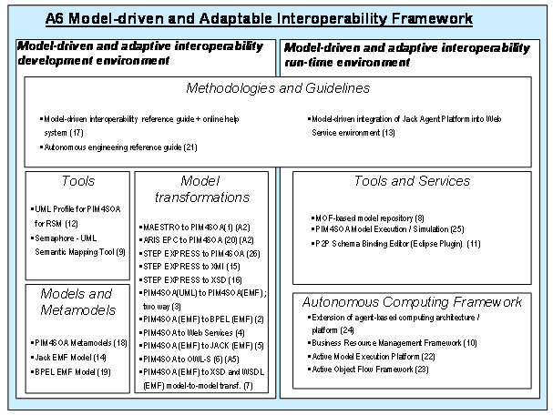

")

Model-driven interoperability
Introduction
The objective of model-driven interoperability is to integrating principles of model-driven development and adaptable interoperability architectures.
- Model-driven development focus on design-time aspects of system engineering. Supporting methods describe how to develop and utilise (visual) models as an active aid in the analysis, specification, design and implementation phases of an information and communication technology (ICT) system.
- Adaptive interoperability architectures focus on run-time aspects of system engineering. Agent and P2P technologies enrich an ICT system with dynamic and adaptive qualities.
The model-driven interoperability approach has resulted in the model-driven and adaptive interoperability framework (Figure 138) which consists of two parts:
- Model-driven and adaptive interoperability development environment
- Model-driven and adaptive interoperability runtime environment
An overview of the framework is described below. For further details please consult the deliverable [ATHENA A6 2006b]./p>

Model-driven and adaptive interoperability development environment
The Model Driven and Adaptive Interoperability Development Environment provides a set of models, model transformations and tools that enable interoperability between modelling tools.
- The PIM4SOA meta-model is the primary vehicle for enabling tool interoperability. It provides a platform independent model of documents, services, processes and non-functional requirements.
- A number of model transformations are provided that allow business models defined in a number of modelling tools to be targeted, via PIM4SOA, at a number of different runtime environments. This allows different styles of business modelling tools to be independent of the eventual runtime environment rather than closely associated together as is most the case today.
- An example of such a tool has been provided by the UML Profile for PIM4SOA which allows business models to be defined by users who are familiar and comfortable with UML.
- In addition a UML semantic mapping tools is provided that UML users to develop conversions of business data from on format to another. For example, converting the external form of a purchase order to an internal form understood by internal applications.
Model-driven and adaptive interoperability runtime environment
The Model Driven and Adaptive Interoperability Runtime Environment provides the ATHENA Autonomous Computing Framework (ACCF) and a set of runtime tools. The AACF framework consists of three integral parts, which are described in detail in this document:
-
Autonomous Service and Information Infrastructure: This part addresses basic methods, tools, models, and protocols to support dynamic and distributed information sharing, provisioning, and management, as well as flexible self-organizing service environments. In this document, we describe two instances of components supporting an autonomous service and information infrastructure:
- The P2P Business Resource Management Framework
- The Active Model Execution Platform
-
Autonomous Behaviour and Process Infrastructure: This section of the framework provides architectures, methods, tools, and protocols geared to describe and enable dynamic system behaviour and adaptive business process composition and management. This document illustrates two results achieved in ATHENA to this end:
- A meta-model, method and tool to support the modelling and execution of business processes devised by software agents.
- The Active Object Flow concept, which extends the Active Object Space by a process description based on UML activity diagrams.
- Autonomous computing engineering reference: It was recognized early in the project that a methodological framework was needed to support the design of systems relying on principles of autonomous computing. The reference guide describes some key aspects of such a design methodology, resulting in a reference guide for designers of autonomous systems, relying on holonic multiagent concepts.